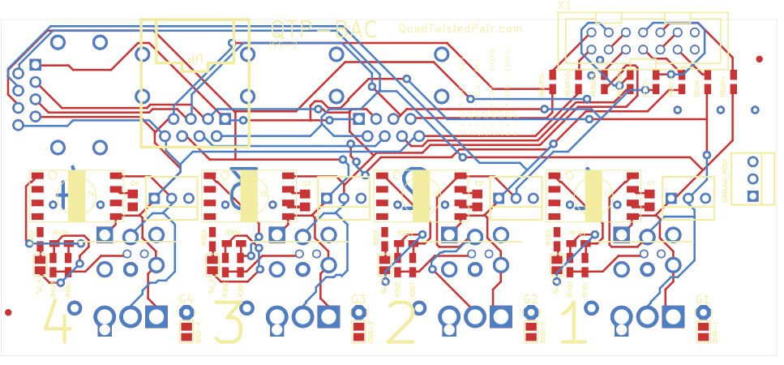
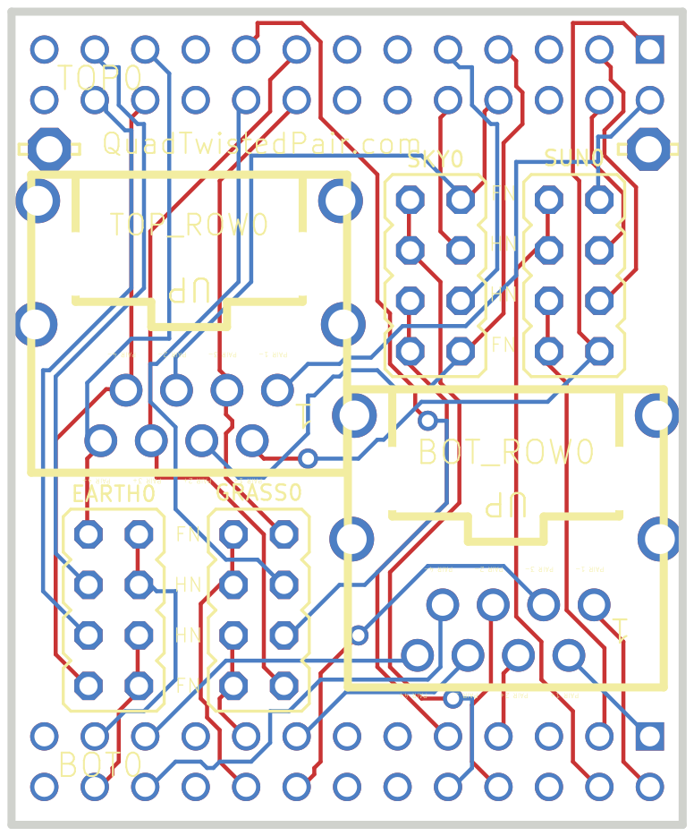
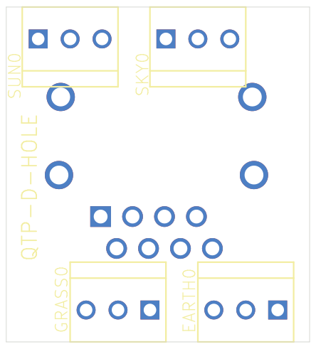
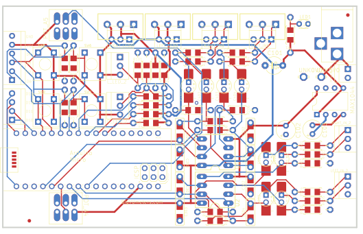
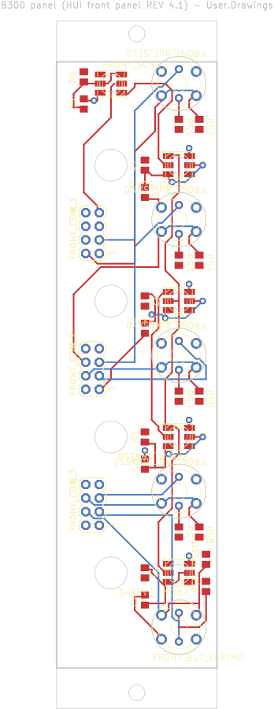
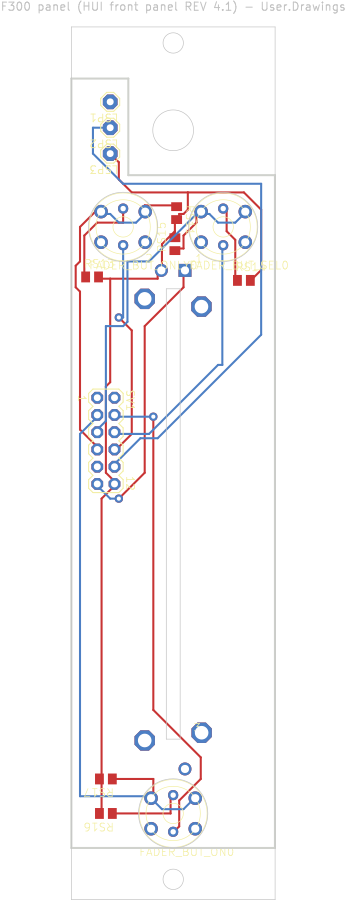
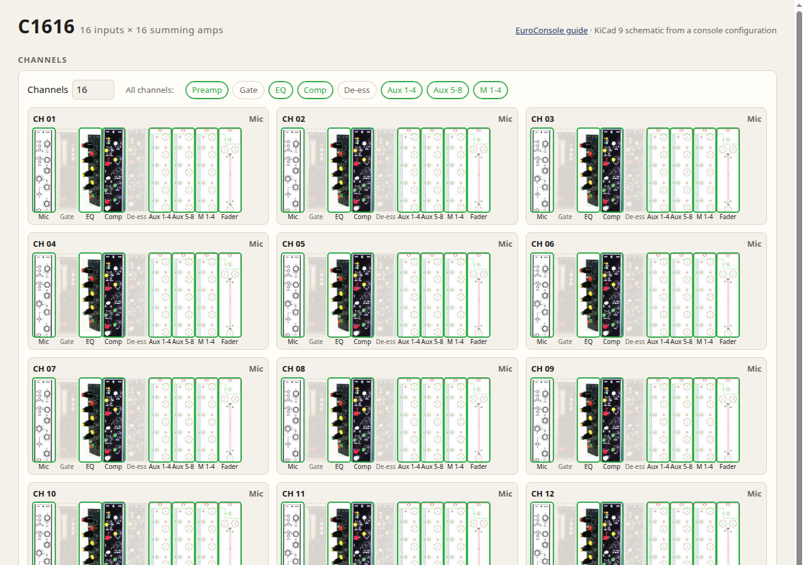

A modular analog console in Eurorack
Ward-Beck Systems circuits, digitally controlled, wired with Quad Twisted Pair. The audio stays analog; the controls go digital.
EuroConsole grows out of the 2016|49 Digitally Controlled Analog Surround Sound Panner (DCASSP), built at APK audio and Ward-Beck Systems as a Seneca College project. Every control you touch (encoder, button, fader, LED) is read by a microcontroller. The microcontroller sets digitally controlled analog parts, such as the Maxim DS1882 log-taper potentiometer, which do the work on the signal. The panel never carries audio, so controls can light up, recall and be driven remotely, while the signal path keeps the Ward-Beck sound.

C1616: 16 inputs × 16 summing amps
The first build. 16 input channels feed 16 summing amplifiers. The summing side is 4 rows of 6 modules, and each row is a 4-input summing console of its own.
16 channel strips
4 summing rows × 6 slots
Each row: four summing amps (the row's SUN · SKY · GRASS · EARTH buses), an insert / patch module and a Big VU. Slots 5–6 are provisional.
The channel strip: B300 Brain + F300 Fader
Two 6HP × 3U modules from HUI front panel REV 4.1. Together they are one channel: 12HP, so 16 strips need three rows of 84HP.

B300 Brain
The INPUT LED and SEL button, plus four auxiliary controls (SUN, SKY, GRASS, EARTH), each with an encoder, a Neopixel and a push-button. It carries the channel's ESP32-S3.
F300 Fader
POS pans across L · C · R · Ls · Rs. ONLY solos, SEL selects, the 60 mm Bourns fader sets the level, and CH ON switches the channel on.
Panning
POS indexes a table of DS1882 settings at 1 dB per step. Each speaker peaks at 63–64 steps, and neighbours cross at 48 (16 dB down). The fader scales the row to a percentage, and everything starts muted at power-up.
Input: M480B
Each channel starts at an XLR into an M480B input module, redrawn in Eagle by APK in 2021|54 from the Ward-Beck original (LM201 op-amps, a MAT-01 matched pair, discrete output stage). Its fader send and fader return run through the B300/F300 strip, so the digitally controlled level sits inside the M480B's own path. Its M1 output is the channel (CH01–CH16).
M480B Input module.sch · symbol pins from 2026/Engineering/KICAD/M480B.kicad_sym
QTP: four channels per RJ45
Every interconnect is Quad Twisted Pair: four balanced analog channels on one RJ45 / CAT5e cable. 16 channels need four cables, and every summing row receives all four.
The shell goes to ground. THAT 1246 receivers and THAT 1646 drivers keep the lines balanced end to end. The 2016|49 QTP-BAC 14.1 board is the four-channel QTP backplane: RJ45, transformers, XLR and BNC.

Summing rows: 4 × 6 = 16 summing amps
Each row takes all 16 channels on four RJ45s. Every channel reaches each of the row's four summing amps through a summing resistor per leg (+ and −). The row's buses then pass an insert and a meter.
| Slot | Module | From the archive |
|---|---|---|
| 1–4 | Summing amplifier, one per bus | M450 program/summing amp (1975|8) · M484 |
| 5 | Insert: send / return per bus | M499 insertion switcher · M466N insert meter (1979|12) |
| 6 | Big VU for the row | RD87 (step 9) |
The 2016|49 prototype summed through 2 × 4 M450A cards. Here every bus gets its own M450.
Processing: EQ, compressor, de-esser, gate
Each processor is a Eurorack module with its own QTP patch point (SUN/SKY in, GRASS/EARTH out), so it patches into any insert. Each one starts from a Ward-Beck circuit already in the archive.
| Function | Starting from | |
|---|---|---|
| EQ | M462B effects equalizer; also M462, M472 | Eagle 2021|54 |
| Compressor | M466 limiter-compressor (1976|9) and its 6-106 control amp | Eagle 2021|54 |
| Output amp | the M466 / M462B output stage | Eagle 2021|54 |
| De-esser | M466 with a frequency-weighted side-chain | new circuit |
| Gate | M467 noise gate and meter | KiCad redraw |
Patch bay
The QTP patch bay puts the inserts and buses on RJ45, normalled through, so one CAT cable patches four channels. It starts from QTP-BITTREE PATCHBAY REV 2.1 (2021|54, Gerbers marked "good to go"): a card with top-row and bottom-row QTP that turns a Bittree bay into a QTP bay. QTP-NEUTRIK D-hole mounts a QTP RJ45 in a standard D-hole.


Big VU (RD87): the meter
Ward-Beck R&D project RD87, the RD87 LED tower (2015|48). A dual op-amp line input feeds an Arduino, which drives two Neopixel towers of 57 pixels each, with a log scale, calibration and two falling peak dots. REV 5 (2021|54) is both the meter and its driver. In EuroConsole it meters the summing rows; it shows two buses per board, so four buses need two boards or a 4-bar version.

Boards so far
KiCad 9 boards converted from the Eagle designs. The 2016|49 Encoder sheet is split per module and placed in the panel's coordinates, with the panel drawing on User.Drawings, then checked against it.
| Board | Size | Check against the panel |
|---|---|---|
| B300_Front | 30 × 113.6 mm | all 14 controls within 0.18 mm |
| F300_Fader | 30 × 113.6 mm | buttons within 0.01 mm · fader pads within 0.02 mm |
| B300_Main | 133.8 × 113.4 mm | side board: 4 encoders, Arduino Mega (to become an ESP32-S3) |
| QTP-BAC 14.1 | 114 × 50 mm | QTP backplane |
| Big VU REV 5 | 102 × 64 mm | meter and driver |
| QTP-BITTREE · QTP-NEUTRIK | 34 × 41 · 24 × 27 mm | patch bay |


Build your console
The console editor builds a specific configuration and writes its KiCad 9 schematic. Each channel is a rack row of real module faces (preamp, EQ, compressor, Aux 1-4, Aux 5-8, M 1-4, fader); click to add or remove modules, then set the summing rows (M1-4, AUX1-8, direct sums). It downloads a hierarchical project: root, channels and one sheet per row, using the archive's own module symbols. The name follows the configuration: 16 × 16 is the C1616.

Sources & roadmap
| Folder | What |
|---|---|
| EAGLE/2016-DCASSP | Encoder PCB 17.2, QTP-BAC 14.1, DS1882 adapter, VU meter and summing amp, block diagram |
| EAGLE/2021-APK | M480B, M462B, M466 and its control amp, output amp, Big VU REV 5, QTP-BITTREE, QTP-NEUTRIK |
| KICAD | the converted boards and split_boards.py |
| MANUALS | 2016|49 DCASSP final report and schematics |
| MECHANICAL · GERBERS · SOFTWARE · PHOTOS | panels, fader drawing, patchbay Gerbers, Big VU firmware, prototype photo |
Roadmap
- B300 / F300 for Eurorack: ESP32-S3 on the B300, F300 by ribbon, 16-pin power (±12 V, regulated to ±7 V for the DS1882), I2C between modules.
- M480B as a Eurorack input module.
- Summing rows: QTP input board, an M450 per bus, an insert per bus.
- EQ, compressor, de-esser and gate modules with QTP patch points.
- QTP patch bay module and Big VU on the ESP32-S3.
- The C1616 frame: rows, power, patch and network control.
© Ward-Beck Systems (Ward-Beck.com - Ward-Beck.ca) · DCASSP design and archive by Anthony Peter Kuzub · WBSps.ca · WBSps.Kuzub.com · README